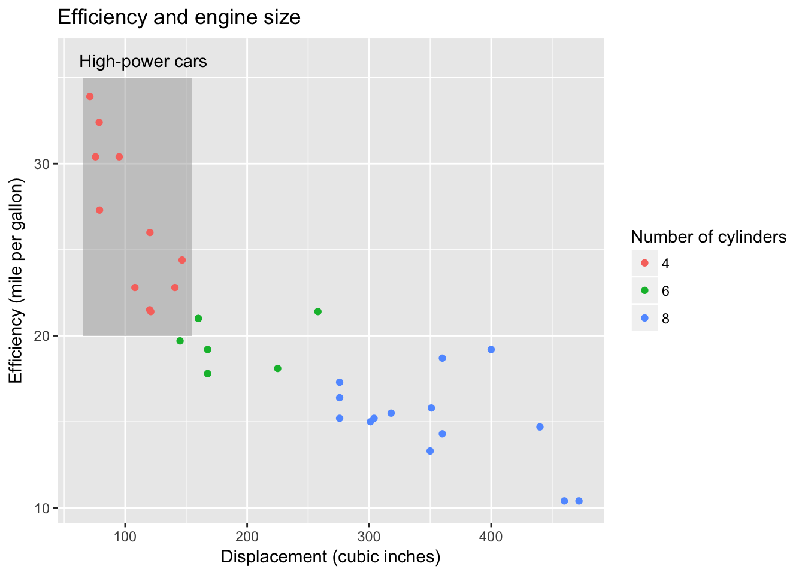

Chapter 8 TODO replace with rain data for SEA
from https://www.r-bloggers.com/ggplot2-time-series-heatmaps-revisited-in-the-tidyverse/
# The core idea is to transform the data such that one can
# plot "Value" as a function of "WeekOfMonth" versus "DayOfWeek"
# and facet this Year versus Month
xts_heatmap <- function(x){
data.frame(Date=as.Date(index(x)), x[,1]) %>%
setNames(c("Date","Value")) %>%
dplyr::mutate(
Year=lubridate::year(Date),
Month=lubridate::month(Date),
# I use factors here to get plot ordering in the right order
# without worrying about locale
MonthTag=factor(Month,levels=as.character(1:12),
labels=c("Jan","Feb","Mar","Apr","May","Jun","Jul","Aug","Sep","Oct","Nov","Dec"),ordered=TRUE),
# week start on Monday in my world
Wday=lubridate::wday(Date,week_start=1),
# the rev reverse here is just for the plotting order
WdayTag=factor(Wday,levels=rev(1:7),labels=rev(c("Mon","Tue","Wed","Thu","Fri","Sat","Sun")),ordered=TRUE),
Week=as.numeric(format(Date,"%W"))
) %>%
# ok here we group by year and month and then calculate the week of the month
# we are currently in
dplyr::group_by(Year,Month) %>%
dplyr::mutate(Wmonth=1+Week-min(Week)) %>%
dplyr::ungroup() %>%
ggplot(aes(x=Wmonth, y=WdayTag, fill = Value)) +
geom_tile(colour = "white") +
facet_grid(Year~MonthTag) +
scale_fill_gradient(low="red", high="yellow") +
labs(x="Week of Month", y=NULL)
}
require(quantmod)
# Download some Data, e.g. the CBOE VIX
quantmod::getSymbols("^VIX",src="yahoo")## [1] "VIX"# lets see
xts_heatmap(Cl(VIX)) + labs(title="Heatmap of VIX")
# ok